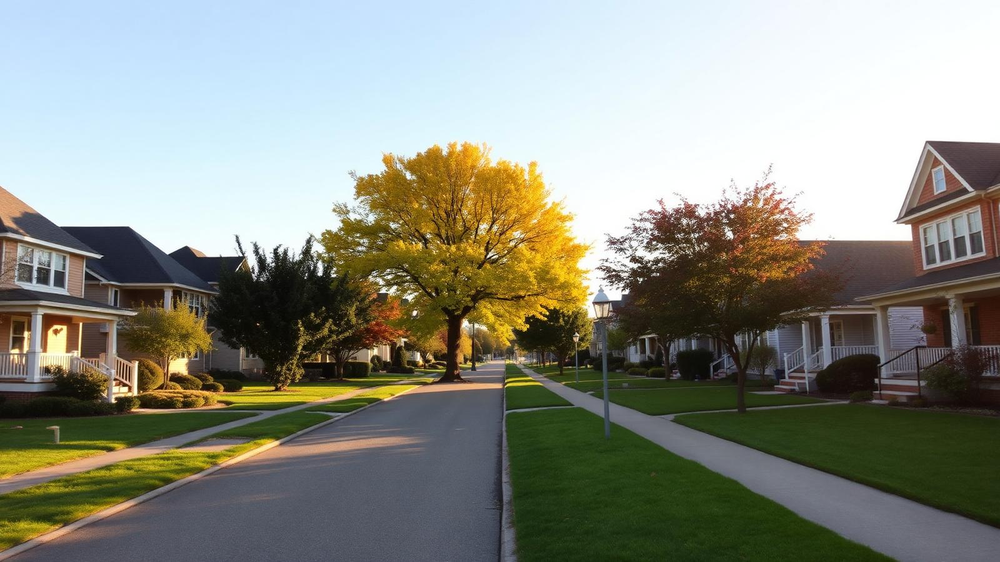

Municipal Election · 2026
Let's Fix London
I'm running for City Councillor - Ward 11 London Ontario, because the future of our ward should be written by the people who live here. Let's fix it together.

I'm running for City Councillor - Ward 11 London Ontario, because the future of our ward should be written by the people who live here. Let's fix it together.
Decisions about our neighbourhoods require more than just presence; they require a commitment to truly listening and acting on our concerns. For too long, that link has been missing.
My years of experience organizing tenants, helping families to find homes and supporting small business owners was built on a simple principle: putting the community first. I’m running to ensure that practical, lived experience, not bureaucracy, is what guides the decisions made on our behalf. It’s time for a new perspective that is truly accountable to you.
Demanding strict operational management and 24/7 on-site accountability for supportive facilities. Zero tolerance on Tents in public places.
Prioritizing community safety and protecting our public parks and family neighborhoods.
Bringing an engineering approach to fix crumbling streets and optimize traffic flow.
Stable funding for our frontline emergency services, cut through the bureaucratic red tape holding back our police service, and actively work to reduce the local property crime rate.

This campaign runs on the energy of neighbours. Whether you have an hour or every weekend, we'd love to have you.